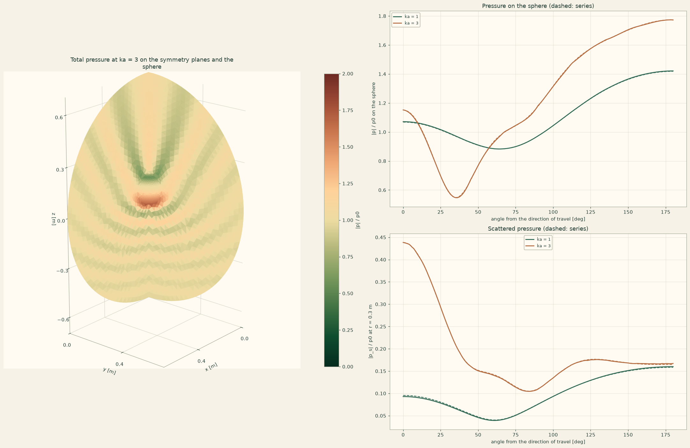
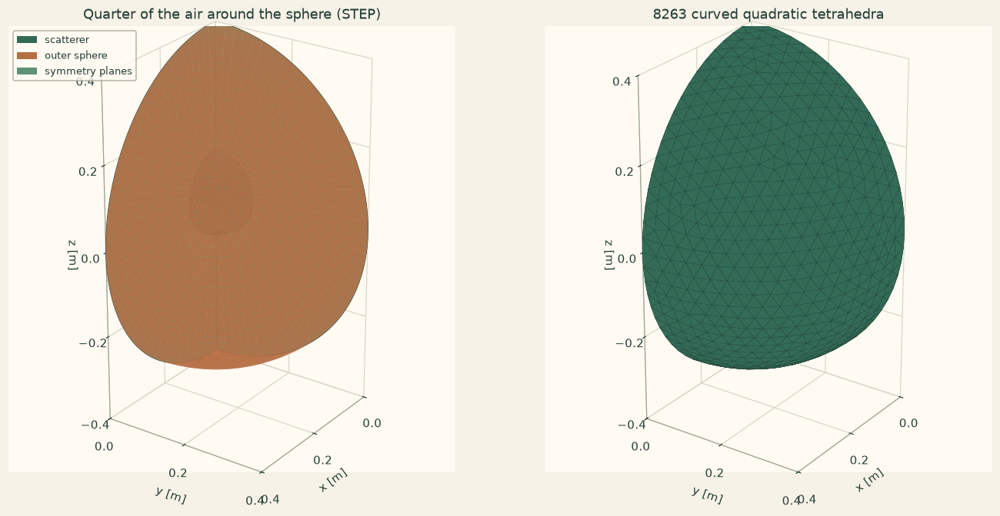

Docs › Examples › Plane wave scattered by a rigid sphere
Pressure acoustics, exterior scattering · 3D
Plane wave scattered by a rigid sphere
The classical benchmark of exterior acoustics: a plane sound wave meets a sound-hard sphere at ka = 1 and ka = 3.
Run locally with OneSimulation. The example downloads are free. Running them requires an activated runtime. Runtime Alpha 0.2.1a7 · CPython 3.13 on macOS (Apple Silicon), Ubuntu 22.04 (x86-64), and Windows x64. Installation and activation · View pilot plans. Scope of the reference checks.

What it computes
OneSimulation reads a quarter of the air around the sphere from STEP files and solves the scattered-field Helmholtz problem with curved quadratic tetrahedra; the incident wave enters as a load on the sphere, the outer sphere carries a spherical-wave admittance and the symmetry planes are natural boundaries. A mesh study and two outer radii separate the discretisation error from that of the radiation condition. The script that builds the STEP file comes with the notebook.
What it checks
With the outer sphere at 0.7 m the pressure on the sphere matches the partial-wave series to 2.2e-3 (ka = 1) and 5.9e-3 (ka = 3) of its maximum and the scattered pressure at 0.3 m to 1.8e-2 and 8.1e-3; refining the mesh changes almost nothing, while moving the outer sphere from 0.4 m to 0.7 m cuts the error at ka = 1 from 6.3e-2 to 1.8e-2, as the 1/(kR)^2 reflection of the spherical-wave admittance predicts.
Geometry
The notebook starts at the import of the CAD files rigid_sphere_scattering.step, rigid_sphere_scattering_large.step: STEP (AP242), readable by any CAD program, with the names of the faces that the boundary conditions use. Put them next to the notebook.

The geometry script
The script rigid_sphere_scattering_geometry.py builds the geometry with the CAD objects of OneSimulation and writes the files. Change a dimension there, run it, and run the notebook again.
"""Geometry of the OneSimulation example "Plane wave scattered by a rigid sphere".
Builds a quarter of the air around a rigid sphere of radius 0.1 m, out to an outer sphere, as a
solid of revolution about the z axis with the CAD objects of OneSimulation. The outer sphere has a
radius of 0.4 m in rigid_sphere_scattering.step and of 0.7 m in rigid_sphere_scattering_large.step;
both name the faces scatterer, outer, symmetry_xz and symmetry_yz.
"""
import numpy as np
from onesim.cad.d2 import Path, Profile, Segment
from onesim.cad.d3 import Revolution
radius = 0.1
for name, outer in (
("rigid_sphere_scattering", 0.4),
("rigid_sphere_scattering_large", 0.7),
):
outline = Path(
(0.0, -outer),
(
Segment((outer, 0.0), center=(0.0, 0.0), name="outer"),
Segment((0.0, outer), center=(0.0, 0.0), name="outer"),
Segment((0.0, radius), name="axis"),
Segment(
(radius, 0.0),
center=(0.0, 0.0),
counterclockwise=False,
name="scatterer",
),
Segment(
(0.0, -radius),
center=(0.0, 0.0),
counterclockwise=False,
name="scatterer",
),
Segment((0.0, -outer), name="axis"),
),
)
air = Revolution(profile=Profile(outline), angle=np.pi / 2)
air = air.grouped(symmetry_xz=air.boundaries.start, symmetry_yz=air.boundaries.end)
air.save(f"{name}.step")The notebook
The complete notebook, cell by cell. Run it to produce the figures and the comparison printout.
A plane wave \(p_i=p_0e^{-ikz}\) travels along \(z\) and meets a rigid sphere of radius \(a=0.1\) m. The sphere throws back a scattered wave \(p_s\); the total pressure is \(p=p_i+p_s\). The scattered field solves the Helmholtz equation outside the sphere with the condition that the total normal velocity on the sphere vanishes. It is computed on a quarter of the air (the field is symmetric about the planes \(x=0\) and \(y=0\)) out to an outer sphere of radius \(R\):
| boundary | condition |
|---|---|
| scatterer, \(r=a\) | rigid: \(\partial_n p_s=-\partial_n p_i\) |
| symmetry planes \(x=0\) and \(y=0\) | \(\partial_n p_s=0\) |
| outer sphere, \(r=R\) | outgoing spherical wave, \(v_n=p_s\,(1+1/(ikR))/(\rho_0c)\) |
The outer condition is exact for the monopole part of the scattered wave and leaves a reflection of order \(1/(kR)^2\) for the higher multipoles. It is the limiting error here, so the outer sphere is taken at \(R=0.4\) m and \(R=0.7\) m (\(kR=4\) and 7 at \(ka=1\)); a frequency-domain perfectly matched layer would remove it but is not used here.
Reference. The exact scattered field is the partial-wave series (P. M. Morse and K. U. Ingard, Theoretical Acoustics, McGraw-Hill 1968, §8.2; J. J. Bowman, T. B. A. Senior and P. L. E. Uslenghi, Electromagnetic and Acoustic Scattering by Simple Shapes, ch. 10),
with spherical Bessel and Hankel functions and \(\theta\) measured from the direction of incidence.
import numpy as np
from onesim.cad.exchange import load
from onesim.meshing import LocalRefinement, TetrahedralMesher
from onesim.numerics.fem import FiniteElement, Lagrange
from onesim.physics.acoustics import (
AcousticHarmonicPressure,
ComplexPressurePencil,
ConstantPressureForms,
PressureAdmittanceBoundary,
PressureTraceSamples,
SampledPressureAdmittanceForms,
SampledPressureVolumeForms,
pressure_space_volume_samples,
)
from onesim.visualization import plots, theme
from scipy.sparse.linalg import spsolve
from scipy.special import eval_legendre, spherical_jn, spherical_yn
theme.set()
c0, rho0, amplitude = 343.0, 1.204, 1.0
impedance = rho0 * c0
radius = 0.1
ka = np.array([1.0, 3.0])
omegas = c0 * ka / radiusGeometry and mesh
Each STEP file holds the quarter of a spherical shell of air as a solid of revolution. Curved quadratic tetrahedra follow the spheres; they are 10 mm on the scatterer and 35 mm (a sixth of the wavelength at \(ka=3\)) far away. On the small shell a second mesh shrinks both sizes by 0.7.
airs = {
"R = 0.4 m": load("rigid_sphere_scattering.step"),
"R = 0.7 m": load("rigid_sphere_scattering_large.step"),
}
cases = (("R = 0.4 m", 1.0), ("R = 0.4 m", 0.7), ("R = 0.7 m", 1.0))
meshes = {
(name, s): TetrahedralMesher(
target_size=0.035 * s,
geometry_order=2,
refinements=(
LocalRefinement(
region=airs[name].boundaries.scatterer, target_size=0.010 * s
),
),
).generate(airs[name])
for name, s in cases
}
air = airs["R = 0.4 m"]
faces = air.boundaries
view = plots.Camera(elevation=25, azimuth=35)
fig = plots.figure(1, 2, size=(15, 7))
plots.geometry(
air,
selection={
"scatterer": faces.scatterer,
"outer sphere": faces.outer,
"symmetry planes": faces.symmetry_xz | faces.symmetry_yz,
},
labels=False,
camera=view,
title="Quarter of the air around the sphere (STEP)",
ax=fig[0],
)
plots.mesh(
meshes[cases[0]],
groups=("all",),
legend=False,
camera=view,
title=f"{meshes[cases[0]].cell_count} curved quadratic tetrahedra",
ax=fig[1],
)
plots.show()Model
Quadratic Lagrange elements; SampledPressureVolumeForms integrates the volume forms and the boundary traces of the two spheres come from the space's trace_data. The outer sphere carries the admittance; the scatterer the load \(-\int\rho_0^{-1}\partial_np_i\,\phi_i\,\mathrm dS\) of the incident wave. AcousticHarmonicPressure solves both frequencies.
incident = lambda omega, points: amplitude * np.exp(-1j * omega / c0 * points[:, 2])
incident_flux = (
lambda omega, points: 1j
* omega
/ c0
* points[:, 2]
/ radius
* incident(omega, points)
)
def solve_scattering(name, level):
"""Scattered pressure at the two frequencies for one outer sphere and mesh."""
mesh, faces, outer = meshes[name, level], airs[name].boundaries, airs[name].size[0]
space = FiniteElement(element=Lagrange(order=2)).bind_space(mesh)
volume = ConstantPressureForms(
*SampledPressureVolumeForms(
size=space.dof_count,
samples=lambda: pressure_space_volume_samples(space),
inverse_density=lambda omega, sample: 1 / rho0,
compressibility=lambda omega, sample: 1 / impedance / c0,
)(0.0)
)
traces = {
face: SampledPressureAdmittanceForms(
size=space.dof_count,
admittance=lambda omega, sample: 1.0,
samples=lambda face=face: iter(
[
PressureTraceSamples(space.cell_dofs[owner], points, weights, basis)
for owner, points, weights, _, basis, _ in map(
space.trace_data, mesh.facets(getattr(faces, face))
)
]
),
)(0.0)
for face in ("scatterer", "outer")
}
radiation = PressureAdmittanceBoundary(
lambda omega: (1 + c0 / (1j * omega * outer)) / impedance * traces["outer"]
)
nodes = space.dof_coordinates
result = AcousticHarmonicPressure(
operator=ComplexPressurePencil(volume, boundary=radiation),
angular_frequencies=omegas,
load=lambda omega: -traces["scatterer"] @ incident_flux(omega, nodes) / rho0,
linear_solver=spsolve,
).run()
return dict(space=space, mesh=mesh, scattered=result.pressure, dofs=space.dof_count)
runs = {case: solve_scattering(*case) for case in cases}Reference
The series, summed to \(n=40\).
orders = np.arange(41)
hankel = lambda n, x, derivative=False: spherical_jn(
n, x, derivative
) - 1j * spherical_yn(n, x, derivative)
series = lambda value, r, theta: -amplitude * np.sum(
(
(-1j) ** orders
* (2 * orders + 1)
* spherical_jn(orders, value, True)
/ hankel(orders, value, True)
)[:, None]
* hankel(orders[:, None], value * r / radius)
* eval_legendre(orders[:, None], np.cos(theta)),
axis=0,
)Results
The total pressure on the sphere (sampled 0.2 mm above it) and the scattered pressure on a circle of radius 0.3 m, both in the plane \(y=0\) from \(\theta=0\) (back side, in the direction of travel) to \(\theta=180°\) (lit side), against the series.
theta = np.linspace(0.0, np.pi, 181)
on_sphere = (
1.002
* radius
* np.column_stack((np.sin(theta), np.zeros_like(theta), np.cos(theta)))
)
ring = 0.3 * np.column_stack((np.sin(theta), np.zeros_like(theta), np.cos(theta)))
surface, around = {}, {}
for level, run in runs.items():
sphere_values = np.asarray(run["space"].evaluate(run["scattered"].T, on_sphere))
ring_values = np.asarray(run["space"].evaluate(run["scattered"].T, ring))
for i, (value, omega) in enumerate(zip(ka, omegas)):
surface[level, value] = sphere_values[:, i] + incident(omega, on_sphere)
around[level, value] = ring_values[:, i]
for value, omega in zip(ka, omegas):
exact_surface = series(value, 1.002 * radius, theta) + incident(omega, on_sphere)
exact_around = series(value, 0.3, theta)
for level, run in runs.items():
print(
f"ka = {value:.0f}, {level[0]}, mesh {level[1]} ({run['dofs']} unknowns): pressure on the sphere, largest deviation "
f"{np.max(np.abs(surface[level, value] - exact_surface)) / np.max(np.abs(exact_surface)):.1e} of its maximum; "
f"scattered pressure at r = 0.3 m, largest deviation {np.max(np.abs(around[level, value] - exact_around)) / np.max(np.abs(exact_around)):.1e}"
)
print(
f"ka = {value:.0f}: |p| on the lit pole {np.abs(surface[cases[-1], value][-1]):.4f} (series {np.abs(exact_surface[-1]):.4f}), "
f"on the shadow pole {np.abs(surface[cases[-1], value][0]):.4f} (series {np.abs(exact_surface[0]):.4f})"
)Figure
Top: the total sound pressure level on the surface of the quarter model at \(ka=3\). Bottom: the pressure amplitude on the sphere and the scattered amplitude at 0.3 m against the series.
fine = runs[cases[-1]]
total = lambda position: np.abs(
np.asarray(fine["space"].evaluate(fine["scattered"][1], position))
+ incident(omegas[1], position)
)
fig = plots.figure(layout=[["field", "sphere"], ["field", "ring"]], size=(17, 11))
plots.trisurface(
*[
np.asarray(item)
for item in (
fine["mesh"].coordinates,
fine["mesh"].facets(
airs[cases[-1][0]].boundaries.symmetry_xz
| airs[cases[-1][0]].boundaries.symmetry_yz
| airs[cases[-1][0]].boundaries.scatterer
),
)
],
total(np.asarray(fine["mesh"].coordinates)),
camera=plots.Camera(elevation=20, azimuth=40),
limits=(0, 2.0),
label="|p| / p0",
title="Total pressure at ka = 3 on the symmetry planes and the sphere",
ax=fig["field"],
)
plots.line(
np.degrees(theta),
{f"ka = {value:.0f}": np.abs(surface[cases[-1], value]) for value in ka},
reference={
f"ka = {value:.0f}": np.abs(
series(value, 1.002 * radius, theta) + incident(omega, on_sphere)
)
for value, omega in zip(ka, omegas)
},
xlabel="angle from the direction of travel [deg]",
ylabel="|p| / p0 on the sphere",
title="Pressure on the sphere (dashed: series)",
legend="upper left",
ax=fig["sphere"],
)
plots.line(
np.degrees(theta),
{f"ka = {value:.0f}": np.abs(around[cases[-1], value]) for value in ka},
reference={f"ka = {value:.0f}": np.abs(series(value, 0.3, theta)) for value in ka},
xlabel="angle from the direction of travel [deg]",
ylabel="|p_s| / p0 at r = 0.3 m",
title="Scattered pressure (dashed: series)",
legend="upper center",
ax=fig["ring"],
)
plots.show()Going further
Make the sphere sound-soft (pressure release) by fixing \(p_s=-p_i\) on it, or replace it by an ellipsoid or a cube in rigid_sphere_scattering_geometry.py: the finite-element route stays the same, only the series is gone.